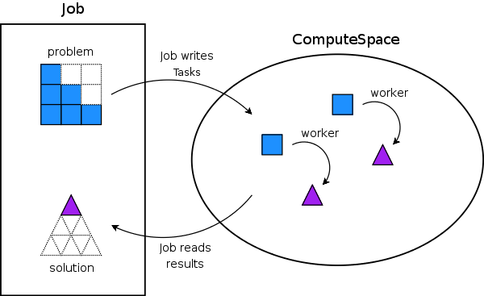

by Tom White
Some programs can be made to run faster by dividing them up into smaller pieces and running these pieces on multiple processors. This is known as parallel computing, and a large number of hardware and software systems exist to facilitate it. The most famous example of a (distributed) parallel program is SETI@home, but there are many other applications including ray tracing, database searching, code breaking, neural network training, genetic algorithms, and a whole host of NP-complete problems where a brute force approach is needed.
ComputeFarm is an open source Java framework for developing and running parallel programs. Under the covers ComputeFarm runs on Jini, which brings code-mobility and fault tolerance to network applications. From version 2.1 onwards Jini is being released under the Apache Licence, version 2.0, so this is an exciting time for Jini. This article introduces ComputeFarm and illustrates how to run parallel programs with it.
ComputeFarm grew out of a JavaSpaces (itself a part of Jini) implementation of the replicated-worker pattern from the definitive book on JavaSpaces, JavaSpaces Principles, Patterns, and Practice by Eric Freeman, Susanne Hupfer, and Ken Arnold. In this pattern, also know as the master-worker pattern, a master process creates a collection of tasks that need running. Workers take tasks from the collection and run them, then hand the computed result to the master. A space is a natural conduit for passing messages between master and workers, due to the decoupled programming style it encourages.
In ComputeFarm, a ComputeSpace holds Task objects and result objects of type Object. Each worker's lifecycle is as follows:
Task from the ComputeSpace.Task.Task result back into the ComputeSpace.
There are typically many workers - and they are identical: hence the term replicated. This pattern neatly provides load-balancing, whereby each worker contributes whatever resources it can afford. The worker on a faster machine will execute more Tasks than the worker on a slower or otherwise heavily-loaded machine; and as long as the granularity of the Tasks is sufficiently fine no one worker will hold up the computation.
A client of ComputeFarm (the master process) will not usually think in terms of the workers doing their work, but in terms of the overall problem they have to solve, called a Job. From the client's point of view, this is what happens:
Job and specifies how to divide it into Tasks.Task is written into a ComputeSpace by the Job.Task in the ComputeSpace is turned into a result by one of the replicated workers.Tasks are read from the ComputeSpace by the Job and combined into an overall result for the client.
Notice that these processes typically run concurrently. So, for example, the client may be still dividing the Job into Tasks as the computed results of earlier Tasks come back to be processed. For the client the ComputeSpace is simply a raw computing resource where tasks are automatically executed as soon as they are dropped into the space. In fact, the client doesn't know about the workers, and they do not appear in the core API. The flow is shown schematically in Figure 1.

That's enough theory, let's write a program to run on ComputeFarm.
To see how ComputeFarm can be useful, consider the following very simple example. If we wanted to calculate the sum of the first n squares, that is,
12 + 22 + 32 + ... + n2
then we might write the following piece of code (ignoring the fact that there is a simple formula for this sum, n(n + 1)(2n + 1)/6):
int sum = 0;
for (int i = 1; i <= n; i++) {
sum += i * i;
}
Now imagine for the sake of example that multiplication is a significantly more expensive operation than addition. If we had multiple processors to run the program on, it would be worthwhile to arrange for the squaring operations to be shared out amongst the processors to reduce the time to calculate the sum. In other words, we break the problem into smaller sub-problems (squaring), and then re-combine the sub-results to produce the final result (addition).
To run a Job, a ComputeFarm client gets a JobRunner from a JobRunnerFactory. There are different implementations of JobRunner which have different strategies for parallelizing Task execution. For unit testing the JobRunner created by a SimpleJobRunnerFactory is handy as it executes all tasks in the same JVM. We shall see later how to run a computation on multiple machines using the JavaSpaces implementation of JobRunner.
First of all, let's see how we can implement a program to calculate the sum of squares, starting with the unit test:
@src/test/org/tiling/computefarm/samples/squares/SquaresJobTest.java@
We create a new SquaresJob to calculate the sum for n = 10, then obtain a JobRunner for it from the SimpleJobRunnerFactory. Calling the run() method on the runner blocks until the job completes, at which point we can retrieve the overall result from the runner and check it has the correct value.
The Job interface specifies two abstract methods:
void generateTasks(ComputeSpace space) where the implementor specifies how the problem is broken up into Tasks, andvoid collectResults(ComputeSpace space) where the implementor recombines the results from each Task into the final result.
Let's see the implementation of SquaresJob:
@src/java/org/tiling/computefarm/samples/squares/SquaresJob.java@
In the generateTasks() method we create a SquaresTask for each term in the sum and write them into the supplied ComputeSpace. Conversely, in the collectResults() method we take task results as they appear from the space and sum them. Both method implementations deal with various exceptions that may arise when interacting with the
ComputeSpace; we shall look at them in more detail later, but for the moment just note that we exit if anything "bad" happens.
Finally, the listing for SquaresTask is very straightforward. It implements the single execute() method of the Task interface, which is an example of the Command Pattern. For this example, the implementation squares an integer. SquaresTask has also been marked Serializable to allow it to be marshalled using RMI, as task instances will be when we use the JavaSpaces runner to share tasks between machines. Similarly, the return type of the execute() method - java.lang.Integer here - must be Serializable.
@src/java/org/tiling/computefarm/samples/squares/SquaresTask.java@
The test now runs and passes. The next step is to see how to run the program on a network of machines.
The key difference between running ComputeFarm in a single JVM (using SimpleJobRunnerFactory), and multiple JVMs (using JavaSpacesJobRunnerFactory) is that in the multiple JVM case there must be some way for the task implementations to be downloaded to each JVM. The way ComputeFarm workers are able to be generic is by dynamic code downloading, which in Java is most commonly achieved by using the mechanisms provided by Java RMI. In a nutshell, this means that Java classes are made available to remote JVMs by providing a codebase - a URL where the classes can be downloaded from. The standard way of doing this is to package up the classfiles that are needed by the remote JVM into a jar that is conventionally named something like myclasses-dl.jar, where the dl indicates the jar is for downloading. Then the jar is made downloadable by running a web server to serve it up.
While all of this is well understood and not inherently difficult, it is an area where there is considerable scope for configuration error (witness the number of hits for a search on "jini codebase problem"). Of course you can use any HTTP server, but to ease development and deployment, ComputeFarm provides a lightweight embeddable server called ClassServer that allows you to run the server in the same JVM as the ComputeFarm client. This avoids some of the complexity of running a separate HTTP daemon, since, for example, the embedded server takes care of choosing a free port number and setting the java.rmi.server.codebase property. You still have to create a download jar, specifying the classes to include in the jar manually, perhaps using the Ant Jar Task. Or you can use a tool that does dependency analysis, such as ClassDep, which is a part of the Jini 2.0 package, or DownloadJar Ant Task from the Cheiron project.
If you want to avoid having to create a download jar, consider using ClasspathServer, which, as the name suggests, serves classes direct from the classpath. It is very simple to deploy - but should be avoided in production environments since it imposes an overhead of one HTTP transfer per class which can be prohibitive for systems which have lots of classes or workers. Furthermore, ClassServer has no security controls governing which classes are downloaded.
The ComputeFarm client is really just an extension of the SquaresJobTest above. Instead of using a SimpleJobRunnerFactory, we call JobRunnerFactory.newInstance() which creates a JavaSpacesJobRunnerFactory by default. (The system property org.tiling.computefarm.JobRunnerFactory can be used to control the implementation class that is loaded by a call to JobRunnerFactory.newInstance().)
Also, a ClasspathServer is started to allow the remote client to download the classfiles for SquaresTask.
@src/java/org/tiling/computefarm/samples/squares/SquaresClient.java@
Before we run SquaresClient, how do we set up our network of workers? I find it convenient to have my development box running both JavaSpaces and the client process (although it is fine to run these two instances on separate machines), and to run a worker on every other available processor on the LAN.
Each machine needs a Java 1.4 runtime, so start by downloading and installing it on every box.
Next set up JavaSpaces. I prefer running ComputeFarm on Blitz JavaSpaces, since it is open source (BSD license) and very easy to get up and running. However, ComputeFarm can run on any JavaSpaces implementation - I have successfully used Outrigger (the JavaSpaces implementation that comes with Jini) and GigaSpaces. To run Blitz JavaSpaces:
java -jar installer_pj_n_nn.jar, where n_nn is the version number. On Windows you can simply double click the jar to launch it.blitz (Windows), or blitz.sh (unix) in the directory you installed it in.Next install the workers. For each worker:
run.(Alternatively you can run workers as screensavers.) Finally, run the client, not forgetting to specify a policy file that grants enough permissions for Jini to work. The following ant task shows one way of doing this. (The ComputeFarm samples distribution, which includes the squares example, has a full ant file.)
@squares.xml@
This is what you should see from the client:
Buildfile: build.xml
squares:
[java] n = 10
[java] Sum of squares = 385
[java] n * (n + 1) * (2 * n + 1) / 6 = 385
Let's look now at how things might go wrong when running a parallel program.
When you move from a single process running your program to multiple distributed processes, there is a change in kind in the types of failure that programs can exhibit. Peter Deutsch famously listed the assumptions that do not carry over to distributed computing in The Eight Fallacies of
Distributed Computing. The development of Jini can be understood as a distributed computing model that takes these fallacies seriously - it doesn't try to "solve" them, it provides mechanisms for the programmer to deal with them. For example, since the network is not reliable, all remote method invocations throw java.rmi.RemoteException for the programmer to handle in the way most appropriate to the application at that point.
Jini's design promotes a certain flexibility and robustness in many of its applications. In ComputeFarm, the order in which services are started is not important. You can start the client first, then the workers, then the JavaSpace, and the system would still work. Or, if a worker crashes the computation would still continue (assuming there are other workers still running), since each task is executed under a transaction, which would be rolled back after the worker crashed, leaving the task in the space for another worker to pick up. JavaSpace systems even clean up after themselves. Any tasks or results left in the space from a cancelled job will be removed when their leases expire. Note that both the transaction timeout and the lease time in ComputeFarm may be configured via system properties, see the javadoc for details.
To make your program robust, you also need to consider how to handle the three possible types of exception that can arise when dealing with the remote ComputeSpace. Let's look at them in turn.
ComputeSpaceException is an unchecked exception which is thrown when there is an unrecoverable error when writing or taking from the space. This case is typically not caused by a networking problem, but by a resource limitation (such as running out of disk space) or encountering an internally inconsistent state (such as not being able to unmarshall a result object). Since it is unchecked (and unrecoverable) you do not normally need to handle this exception.
CannotWriteTaskException and CannotTakeResultException are the same type of checked exception, the only difference is that the first may be thrown during write operations, and the second during take operations. These exceptions are thrown if there is a transient problem while communicating with the space. They guarantee that the state of the space will not have been changed by the method call, so a write() call does not write the task to the space, and a take() call does not remove a result from the space.
Users of the space can catch these exceptions to implement a retry strategy - for example, retrying a limited number of times after a suitable interval - safe in the knowledge that the space has not been left in an indeterminate state. This is not quite the full story, since, due to the concurrent execution of the generateTasks() and collectResults() methods, it is possible that the client could block indefinitely on the call to take(), if a call to write() has failed with a CannotWriteTaskException and the client has stopped trying to do any further writes.
The way to unblock the execution is to invoke the cancel() method on the JobRunner which started the Job. This can be done by the code in the Job implementation that implements the retry strategy, when it has decided to give up. Alternatively, the client that creates and runs the JobRunner can call cancel() when it decides that the job has not completed in a sufficiently timely manner - perhaps under user intervention, or a pre-defined timeout. The following code illustrates the latter strategy for a job called NonTerminatingJob, which blocks in the way described above.
@src/java/org/tiling/computefarm/samples/nonterminating/NonTerminatingClient.java@
The client creates a new thread to run the JobRunner for NonTerminatingJob, then it terminates the job after waiting for 5 seconds by calling cancel() on the JobRunner.
CancelledException is a checked exception that is only thrown when cancel() has been called on the associated JobRunner. The way to handle the exception is obviously to stop doing any more work and clean up. Here is the code for NonTerminatingJob, and the output showing the sequence of calls:
@src/java/org/tiling/computefarm/samples/nonterminating/NonTerminatingJob.java@
Buildfile: build.xml
nonterminating:
[java] Waiting 5 seconds before cancelling job...
[java] Collecting results...
[java] Cancelling job...
[java] Waiting for job runner to finish...
[java] Job cancelled.
[java] Job runner finished.
For the example we looked at in this article it was not really worth the effort to re-cast it as a parallel program since there are no real performance benefits. However, there is a class of problems which are both computationally expensive and can be split into independent chunks, where re-writing as parallel programs is highly beneficial. (For example, the ComputeFarm samples distribution includes a distributed extension of JUnit. And the training component of Joone, the leading open-source Java Neural Network framework, runs on ComputeFarm.) If you have an application that fits this description, then consider using ComputeFarm to distribute the processing effort across a network of machines.